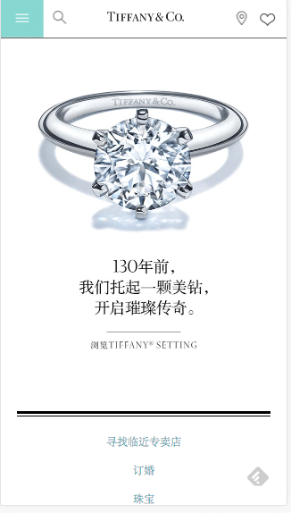
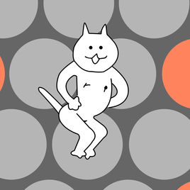
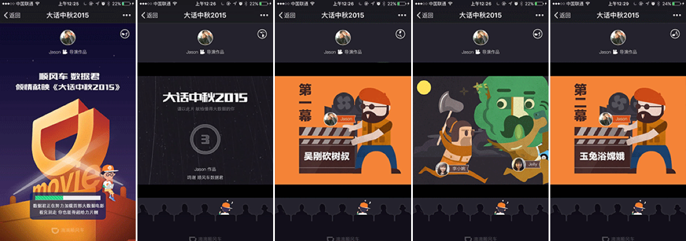
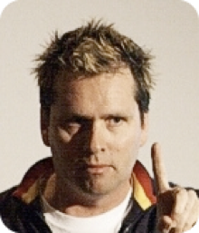
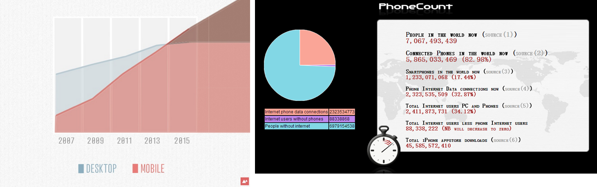
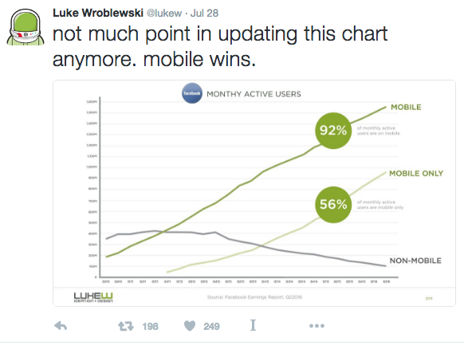
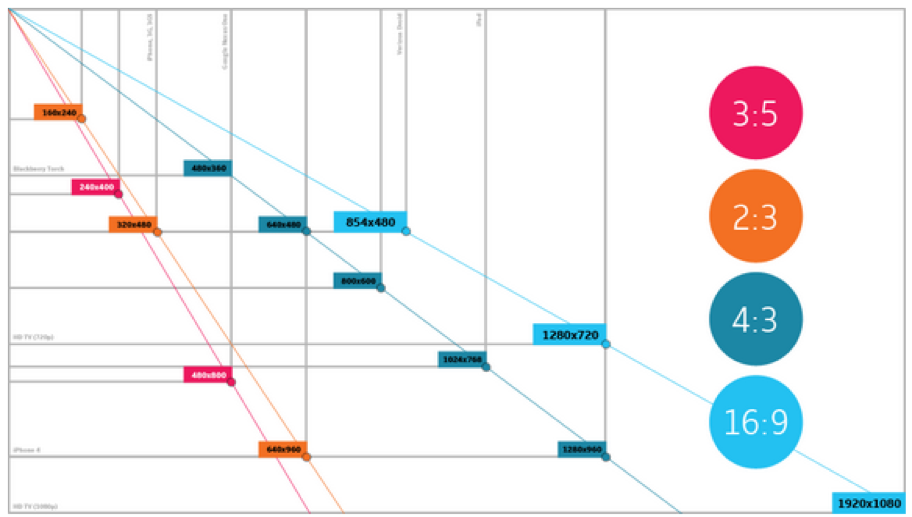
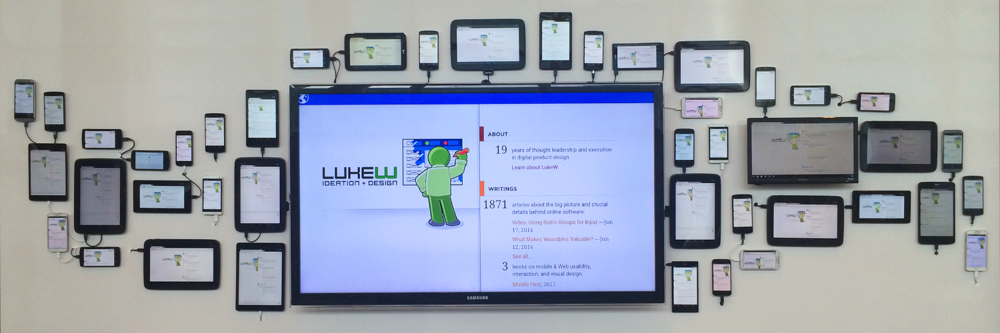

3 types：
Tiffany (by Brad Frost)

神经猫（by Egret）

顺风车大电影（by GANG）

“网页和打印介质的不同在于它具有打印介质没有的灵活性，我们应该接受这种灵活性并且利用它。” ——John Allsopp, 2000.4.7, "A Dao of Web Design"

设计是为内容服务的，所以内容比设计更重要。脱离内容的设计就不是设计了，只能称为装饰。
——Jeffrey Zeldman
“我常常诧异于那些不做设计的人他们居然有这样的观点：“设计不就是上上色、加点装饰吗？”——诚然，有很多的烂设计只是为页面加点装饰而已，但是好的设计绝非如此，好的设计都在解决问题。”
— JEFFREY VEEN

Sara Cannon, 2012.5.7, "Responsive Design",
http://www.slideshare.net/saracannon/responsive-design-12837964?from_search=2
Phone Count,
http://phonecount.com/pc/count.jsp

Luke W. 2016.7.28: https://twitter.com/lukew/status/758433206882361345

Andy Gilliland, 2011.4.1, "Pixel Proliferation: A Toolset For Managing Screen Resolutions",
http://punchcut.com/perspectives/expanding-universe-toolset-managing-screen-resolutions

http://justcreative.com/2015/01/02/web-design-trends-predictions-2015/
IE windows phone, Firefox, Chrome, Opera, Safari, UC、海豚、QQ, Webview(主要是X5)
首先，Web页面是一份文档。
透明、圆角、动画、渐变、变形……